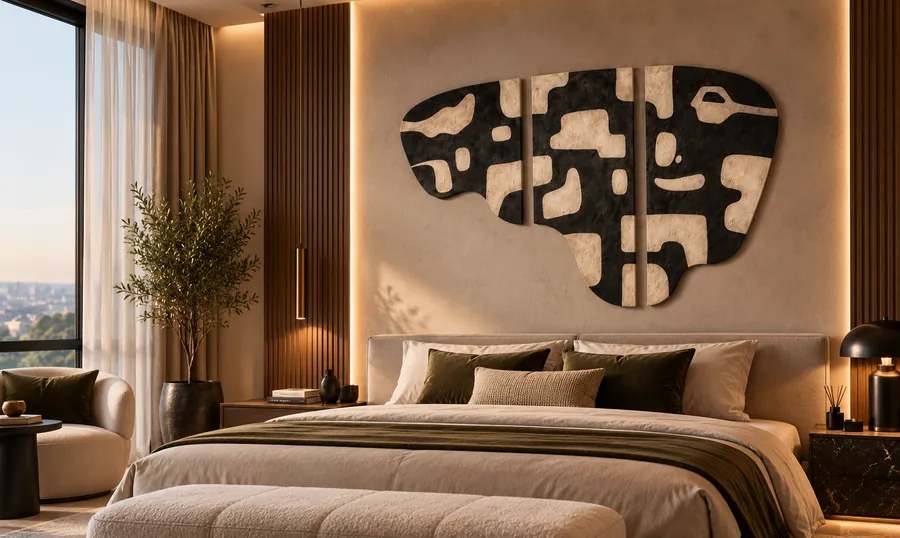

The Art of Living
An exploration of artistic expression, thoughtful interiors, and the timeless relationship between art and the spaces we inhabit.
Art & Inspiration

Art is born from the quiet details of every space, transformed into texture, colour and light.
Every piece is crafted to bring space and serenity together.
The Art of Interiors

Art is more than decoration, it is the soul of a thoughtfully designed space.
Where every wall becomes an expression of style and individuality.
Behind the Artwork

Every artwork begins with an idea, shaped by imagination and brought to life through creativity. Discover the thought, materials and craftsmanship behind each creation. From the first inspiration to the final details, every element reflects a dedication to artistic expression.
Every creation has a story. Every detail has a purpose.
Materials and Craft

The beauty of art lies not only in what we see, but also in what goes into its creation.
Thoughtfully crafted. Distinctively expressed. Timelessly admired.
The Art of Details

True beauty is never limited to what meets the eye; it lives in the details that make every creation unique. Every artwork holds a world of details waiting to be discovered. From delicate textures to subtle layers, each element adds character. At BUNT ELEGANCE, we believe that the smallest details make the greatest impression.
Look closer. Discover the extraordinary in every detail.
The Art of Timeless Living

Some art follows trends. Timeless art creates its own identity. True elegance never goes out of style; it lives beyond trends, bringing character, balance and a lasting sense of beauty to every space. At BUNT ELEGANCE, we believe that art is more than an element of decoration. It becomes part of the spaces we live in, the moments we cherish and the stories we create.
Beyond trends. Beyond time. Always meaningful.
The Art of Collecting

Collecting art is not simply about owning a creation; it is about preserving a feeling, a story and a piece of individuality. Every artwork carries its own identity, character and meaning. Choosing a piece of art is a personal experience, a connection between the creation and the collector.
Own a creation. Preserve a story. Celebrate individuality.